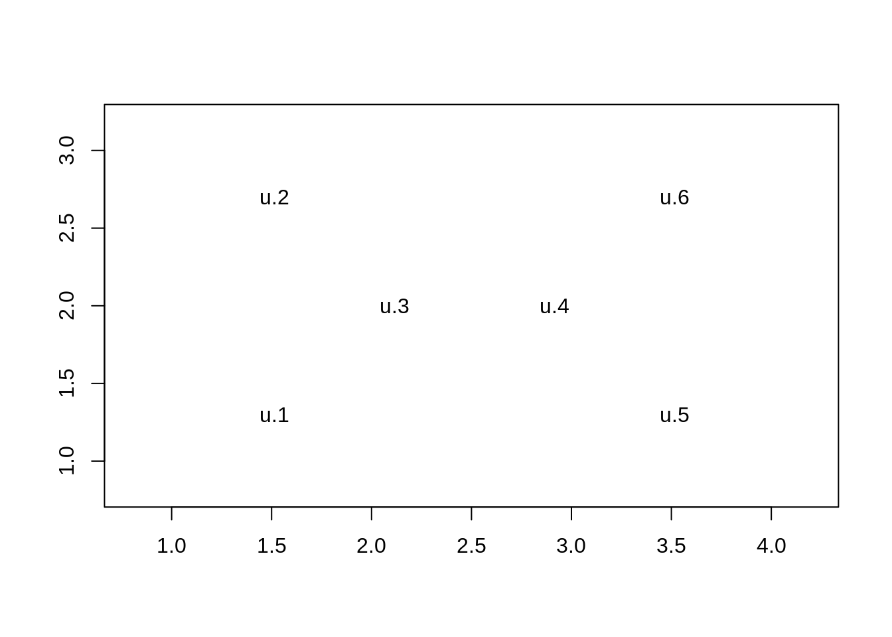
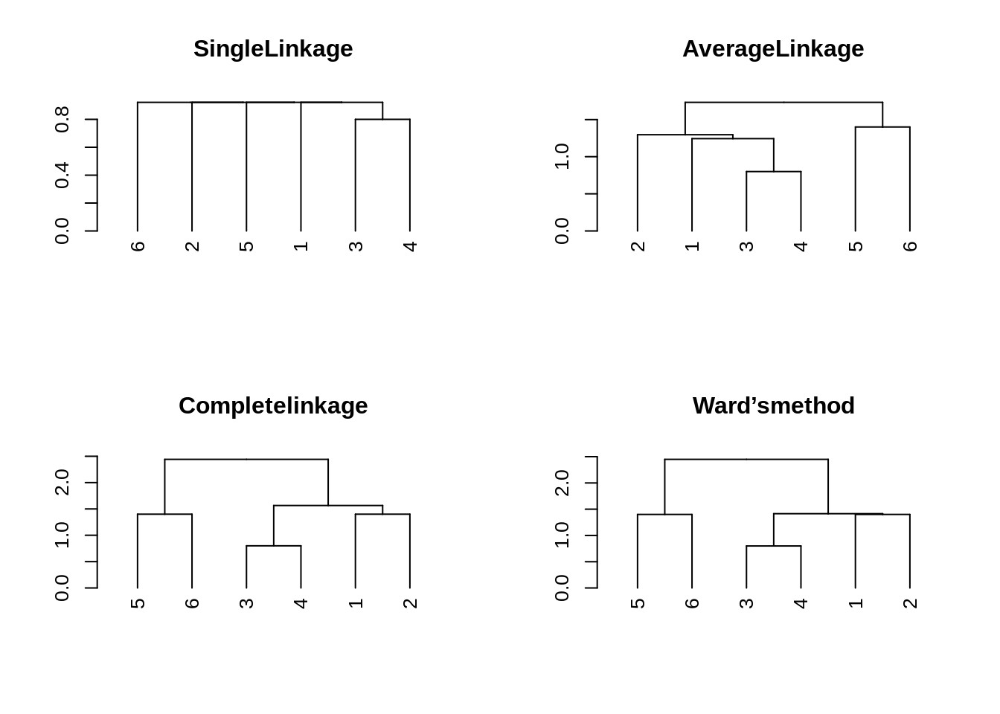

El clustering jerárquico es bastante intuitivo y fácil de implementar. En este sentido la clase de métodos no jerárquicos son mas complejos y contra-intuitivos, ademas el número de cluster se debe elegir antes de aplicar el algoritmo. Hay dos ventajas de usar estos métodos
Para mostrar esta ultima ventaja veamos el siguiente ejemplo
X <- matrix(c(1.5 ,1.5 ,2.1 , 2.9 , 3.5 , 3.5 , 1.3 ,2.7 , 2.0 , 2.0 , 1.3 , 2.7) , ncol = 2)
plot( X , type = "n" , xlim = c(0.8 , 4.2) , ylim = c(0.8 , 3.2) , xlab = " " , ylab = " " )
text( X[ , 1] , X[ , 2] , paste ( " u." , 1:6 , sep = "" ) )
Supongamos que estamos interesados en detectar una partición con \(k=2\) clusters. Mirando la figura para razonable un cluster formado por \(u.1\), \(u.2\) y \(u.3\)y otro formado por \(u.4\), \(u.5\) y \(n.6\). Sin embargo los métodos aglomerativos fallan en encontrar esta partición.
D <- dist (X)
par ( mfrow = c(2 , 2))
res <- hclust(D, method = "single")
plot( as.dendrogram(res), main = "SingleLinkage")
res <- hclust( D , method = "average" )
plot( as.dendrogram(res), main = "AverageLinkage" )
res <- hclust(D,method="complete")
plot(as.dendrogram(res) ,main = "Completelinkage")
res <- hclust(D,method="ward.D2")
plot(as.dendrogram(res), main = "Ward’smethod" )
Notemos que en el primer paso se une la unidad 3 con la unidad 4, por lo que no es posible llegar a la partición que queriamos.